AI Website Generator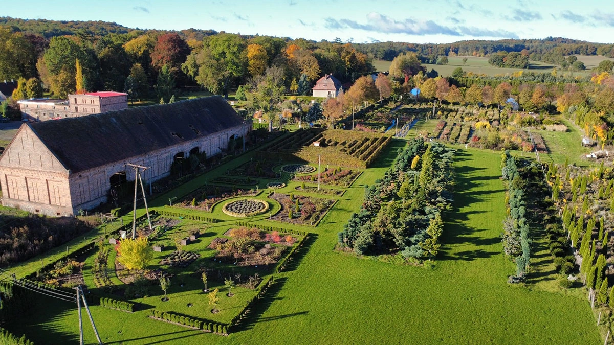
Fundacja została wpisana do Krajowego Rejestru Sądowego 03.03.2017 r. Prezesem Zarządu jest Anna Gomułka. Od tamtej pory prowadzimy remont pałacu w Dalkowie, organizujemy warsztaty z hortiterapii, spacery z przewodnikiem po Wzgórzach Dalkowskich oraz opiekujemy się zabytkowym parkiem i kompleksem siedmiu Ogrodów "Centrum Hortiterapii-Ogrody Zmysłów na Wzgórzach Dalkowskich".
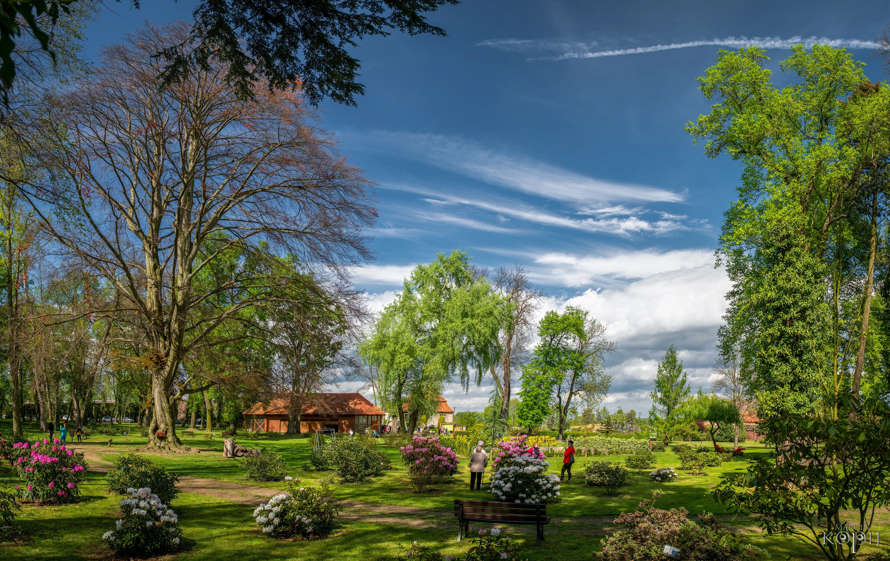
Jednym z naszych najważniejszych zadań jest odnowa zabytkowego zespołu pałacowo‑parkowego. W latach 2021–2025 przeprowadziliśmy kompleksowy remont dachu pałacu, a od 2023 r. trwa renowacja stolarki okiennej — w tym unikatowych w Polsce okien w stylu angielskim (otwieranych góra-dół). Równolegle prowadzimy rewitalizację zabytkowego parku, przywracając mu dawny wygląd i otwierając go na mieszkańców oraz turystów.
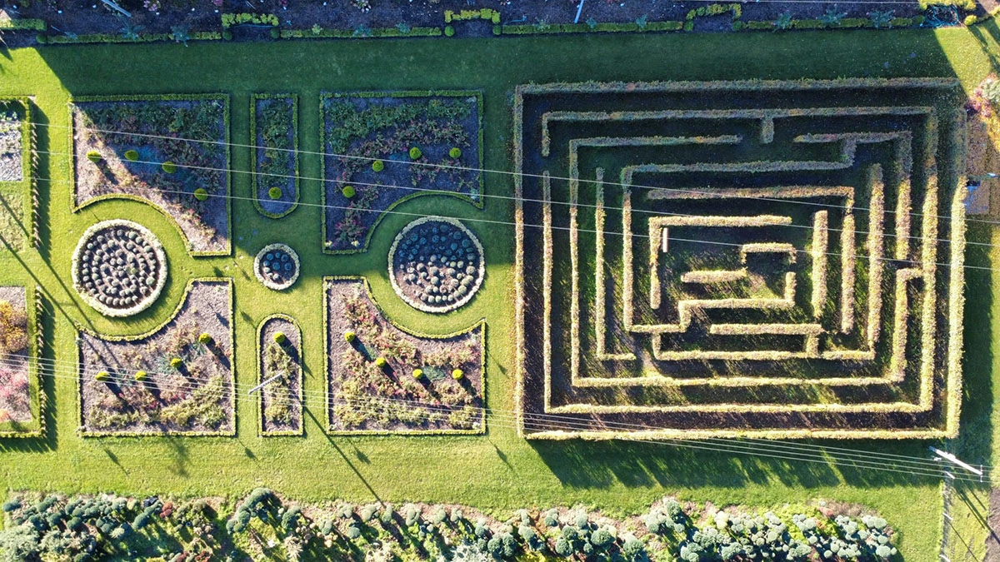
W sercu Wzgórz Dalkowskich — w Dalkowie — stworzyliśmy wyjątkowy kompleks Ogrodów Zmysłów — przestrzeń edukacyjną, terapeutyczną i rekreacyjną. Założenie to składa się z:
- Ogrodu Smaku
- Ogrodu Węchu
- Ogrodu Dotyku
- Ogrodu Słuchu
- Ogrodu Wzroku
- Labiryntu Grabowego
- Ogrodu Francuskiego
W Ogrodach rośnie ponad 6000 roślin, w tym 800 róż w 70 odmianach. W każdym z ogrodów znajdują się rośliny pobudzające nam dany zmysł — przykładowo w Ogrodzie Węchu znajdziemy aromatyczne zioła, kwitnące wiosną i pachnące drzewa ozdobne, lawendy, róże, lilie itd. W Centrum Hortiterapii znajdują się także zwierzątka - miniaturowe króliczki, które można karmić. Są tu również elementy małej architektury i gry edukacyjne (ścieżka sensoryczna, fitoterapia i aromaterapia, gra „Ile waży drewno”, gra "Leśne cymbały").
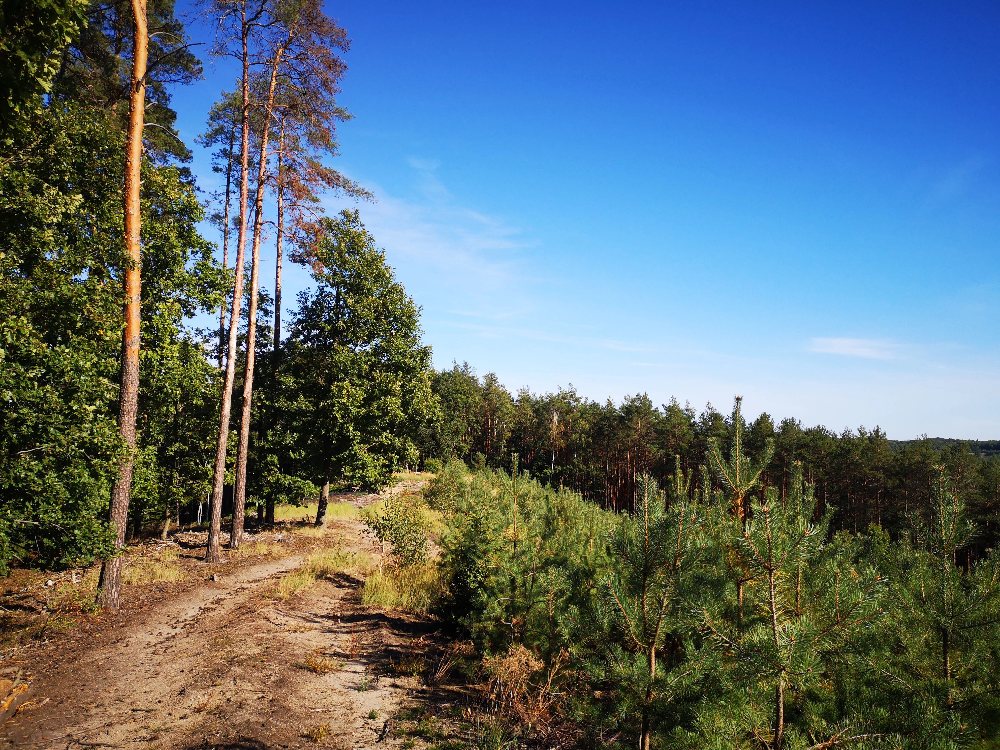
Dzięki środkom pozyskanym z Urzędu Marszałkowskiego Województwa Dolnośląskiego wytyczyliśmy trzy szlaki turystyczne o łącznej długości ok. 26 km.
Są to trasy, które pozwalają odkrywać przyrodę, historię i krajobrazy regionu. Wszystkie szlaki rozpoczynają i kończą się w Dalkowie, gdzie można na czas spaceru zaparkować auto. Szlaki prowadzą przez najbardziej malownicze zakątki Wzgórz Dalkowskich — m.in. Górę Świętej Anny, Górę Jana czy Wilczy Grzbiet, skąd rozpościerają się przepiękne widoki na tzw. "Małe Bieszczady".
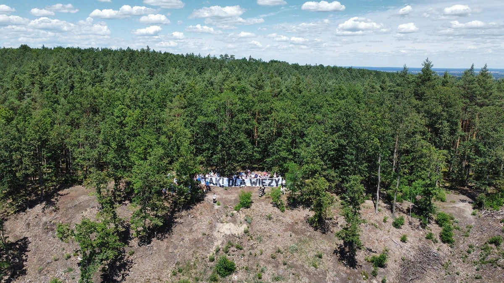
Od początku istnienia Fundacji podejmujemy działania mające na celu doprowadzenie do wybudowania wieży widokowej na Wzgórzach Dalkowskich, w miejscu gdzie przed wojną znajdowała się wieża nawigacyjna dla samolotów wojskowych z funkcją widokową. W ramach podejmowanych działań wielokrotnie zorganizowaliśmy w Dalkowie spotkania, w których uczestniczyli przedstawiciele lokalnych samorządów, Nadleśnictwa Głogów, organizacji pozarządowych, w ramach których omawiane były możliwości wykonania wyżej wspomnianej inwestycji. W czerwcu 2024 r. Fundacja zorganizowała akcję „Tak dla wieży na Wzgórzach Dalkowskich” – spacer, w ramach którego uczestnicy wraz z kilkunastometrowym transparentem popierającym ideę wybudowania wieży na Górze Jana w okolicy Dalkowa udali się na najwyższy szczyt w okolicy, by wspólnie zrobić zdjęcie z drona wykazując tym samym poparcie dla tej idei. W wydarzeniu wzięło udział ponad 150 osób, w tym Starosta Powiatu Polkowickiego – Pan Kamil Ciupak, Wójt Gminy Gaworzyce – Pan Jacek Szwagrzyk, Nadleśniczy Nadleśnictwa Głogów – Pan Adam Grzelczak, Radny Gminy Gaworzyce i równocześnie pomysłodawca idei — Pan Józef Płocha oraz Prezes Fundacji na rzecz Rodziny i Rewitalizacji Polskiej Wsi – Pani Anna Gomułka. Wydarzenie zainteresowało lokalne media, które chętnie pisały o pomyśle wybudowania w tym regionie wieży widokowej.
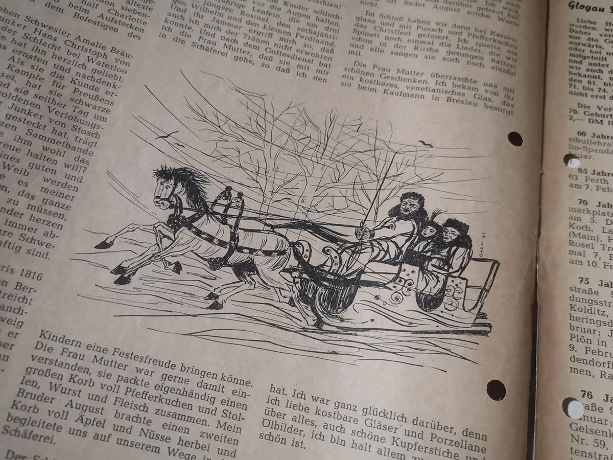
Prezes Fundacji — Anna Gomułka — przetłumaczyła z języka niemieckiego na język polski Pamiętnik Luise von Liebermann — dziennik córki dawnych właścicieli pałacu, która w latach 1816–1823 opisywała życie w Dalkowie. Do Pamiętnika zostały wykonane stylizowane fotografie autorstwa Marcina Kopija. Pamiętnik ukazywał się najpierw w mediach społecznościowych Fundacji, następnie przez rok wpisy publikowane były w Tygodniku Głogowskim. Ostatecznie Pamiętnik został wydany w wersji drukowanej i stał się podstawą do stworzenia stacjonarnego szlaku turystycznego Pamiętnik Luise von Liebermann na terenie Centrum Hortiterapii.
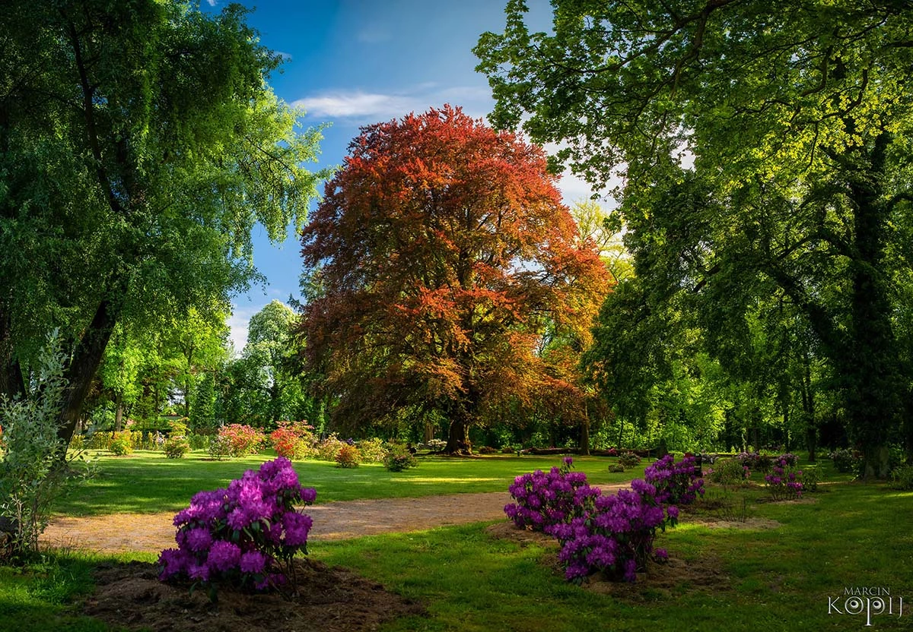
300‑letni buk purpurowy z Dalkowa nazywany Sercem Wzgórz Dalkowskich zdobył tytuły:
- Drzewa Roku 2024 w Polsce – 10 521 głosów
- Europejskiego Drzewa Roku 2025 – 147 553 głosy
Uroczyste wręczenie nagrody odbyło się 19 marca 2025 r. w Parlamencie Europejskim w Brukseli. Drzewo rośnie na terenie zabytkowego parku w Dalkowie.
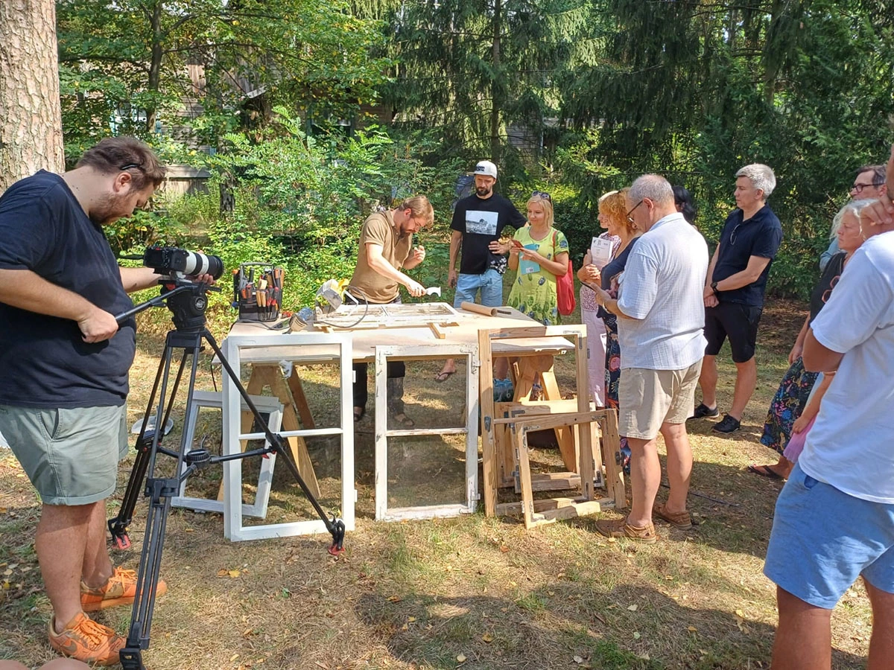
Fundacja z Dalkowa została kilkukrotnie zaproszona do współpracy w ramach organizowanych cyklicznie Dni Architektury Drewnianej. W ramach wydarzenia prowadzimy warsztaty z renowacji zabytkowej stolarki okiennej i drzwiowej. W 2023 r. zostaliśmy zaproszeni do zaprezentowania pałacu w Dalkowie podczas międzynarodowego seminarium z renowacji zabytkowej stolarki okiennej, jakie miało miejsce w Krakowie. Organizatorem seminarium był Narodowy Instytut Dziedzictwa oraz Centrum Architektury Drewnianej. W 2024 r. również na zlecenie Narodowego Instytutu Dziedzictwa w ramach Dni Architektury Drewnianej poprowadziliśmy w Józefowie pod Warszawą warsztaty z renowacji historycznej stolarki okiennej na przykładzie renowacji okien w stylu angielskim z dalkowskiego pałacu. W 2025 r. ponownie w ramach tego samego wydarzenia poprowadziliśmy warsztaty z renowacji zabytkowej stolarki okiennej i drzwiowej w Moryniu (woj. zachodniopomorskie).
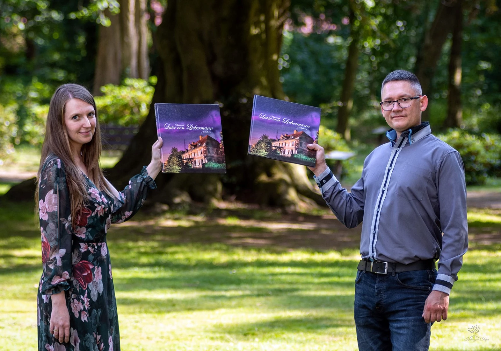
Fundacja z Dalkowa wydała liczne publikacje, m.in.:
- „Korzenie Wzgórz Dalkowskich”
- „Korzenie Piórem Pisane Potomnym Opowiedziane”
- „Polak mądry PRZED”
- Album fotograficzny „Szlakami Wzgórz Dalkowskich”
- „Pamiętnik Luise von Liebermann z Dalkowa”
Na zlecenie Gminy Gaworzyce opracowaliśmy także dwutomową publikację „Gawo‑życie. Gminne opowiastki o wyjątkowych ludziach i miejscach”.
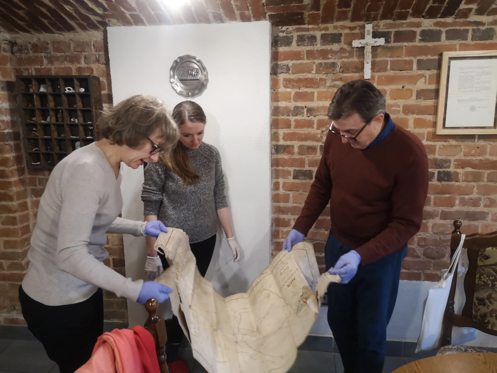
Od początku istnienia Fundacji zbieramy i zabezpieczamy archiwalia dotyczące regionu — stare książki, pocztówki, pamiątki, fotografie, dokumenty. Docelowo wszystkie te pamiątki planujemy zabezpieczyć i wyeksponować w ramach Regionalnej Izby Pamięci. Przeprowadziliśmy również kilkadziesiąt wywiadów z najstarszymi mieszkańcami a także z osobami, posiadającymi na temat regionu Wzgórz Dalkowskich największą wiedzę. Współpracujemy z regionalistami i Towarzystwem Ziemi Głogowskiej.
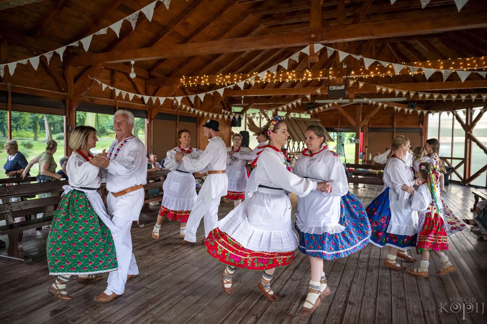
Cyklicznie organizujemy wydarzenia, które łączą społeczność i promują region:
Festiwal Kwitnących Azalii i Rododendronów
Spacery z przewodnikiem po Wzgórzach Dalkowskich
Wieczory Pieśni Patriotycznych i Biesiadnych
Targ żywności, rękodzieła i roślin
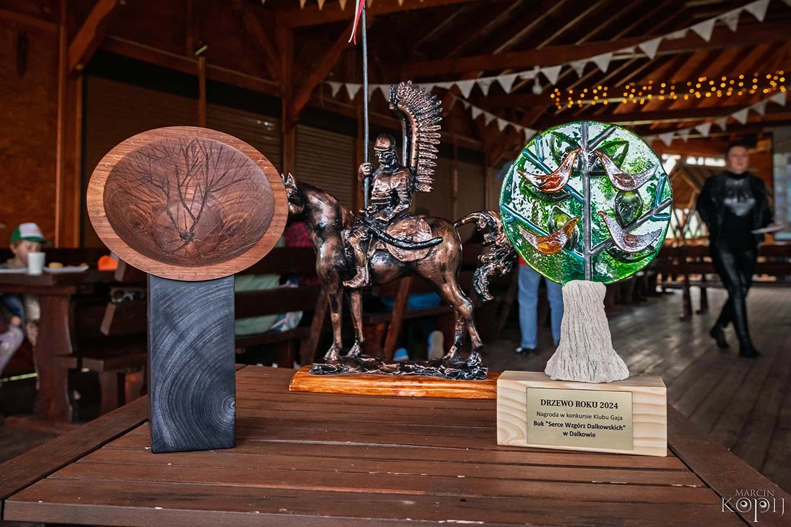
• 2022 r. – Nominacja Fundacji przez Głogowski Wehikuł Czasu i Towarzystwo Ziemi Głogowskiej do X Głogowskiej Nagrody Historycznej
• 2023 r. – Nagroda Marszałka Województwa Dolnośląskiego za wybitne osiągnięcia w dziedzinie kultury – w zakresie konserwacji zabytków
• 2023 r. – I miejsce w plebiscycie Radia Wrocław TOP5 na Dolnym Śląsku w kategorii "Fani historii"
• 2024 r. – Uzyskanie tytuł Drzewa Roku 2024 dla buka Serce Wzgórz Dalkowskich z Dalkowa
• 2025 r. – Uzyskanie tytuł Europejskiego Drzewa Roku 2025 dla buka Serce Wzgórz Dalkowskich z Dalkowa
• 2025 r. – Pałac w Dalkowie w Programie Opieki nad Zabytkami Województwa Dolnośląskiego na lata 2025-2028 został uznany za zabytek o znaczeniu ponadregionalnym
Naszą działalnością edukacyjną i historyczną zainteresowały się ogólnopolskie media – Dzień Dobry TVN, Teleexpress, Radio Wrocław i TVP Kultura. Po wygranej buka z Dalkowa w konkursie na Europejskie Drzewo Roku 2025 r. o Dalkowie informowały wszystkie media ogólnopolskie oraz media zagraniczne (BBC). Łącznie w marcu 2025 r. po ogłoszeniu wyników w sieci i prasie drukowanej polskiej i zagranicznej pojawiło się ponad 70 artykułów nt. wygranej buka z Dalkowa. Wpłynęło to znacząco na promocję Dalkowa i Wzgórz Dalkowskich – od tej pory regularnie przyjeżdżają tu turyści z różnych zakątków Polski, Europy a nawet odwiedzający Dolny Śląsk turyści z innych kontynentów (Ameryka Północna, Ameryka Południowa, Australia). Wszystko to prowadzi do przywrócenia dawniej bardzo dobrze funkcjonującej tu turystyki w regionie Wzgórz Dalkowskich.
AI Website Generator